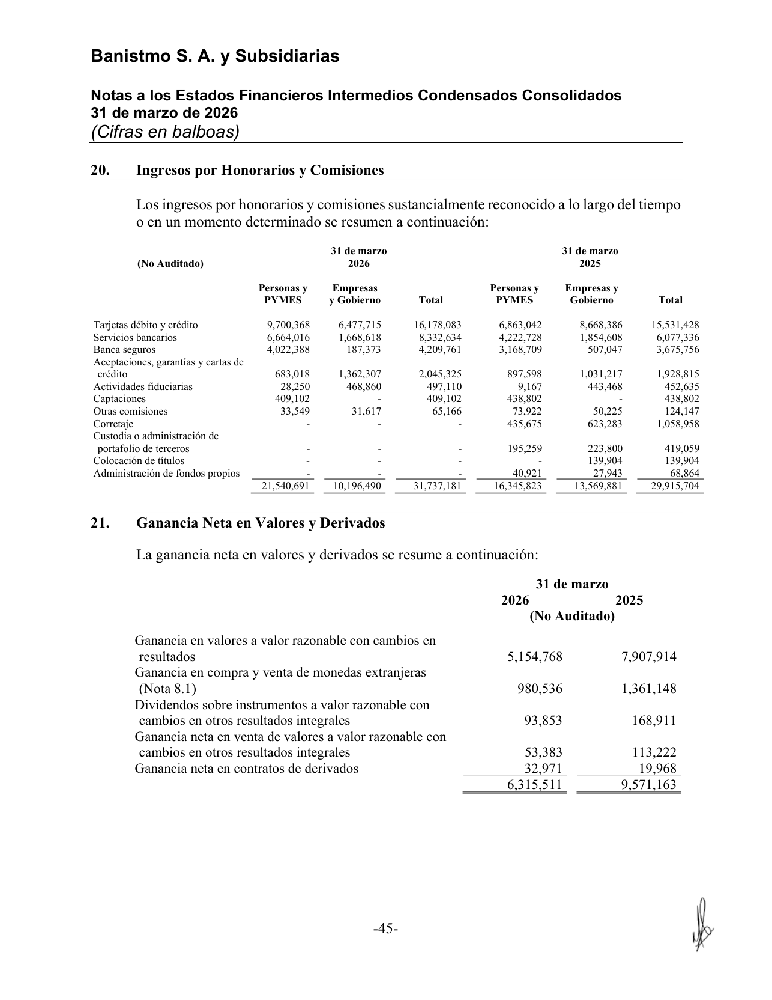
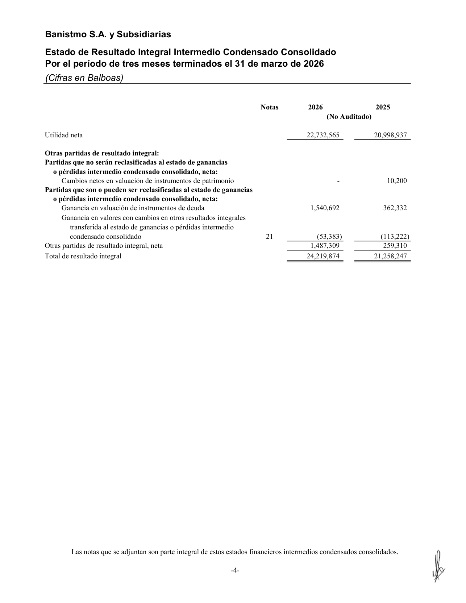
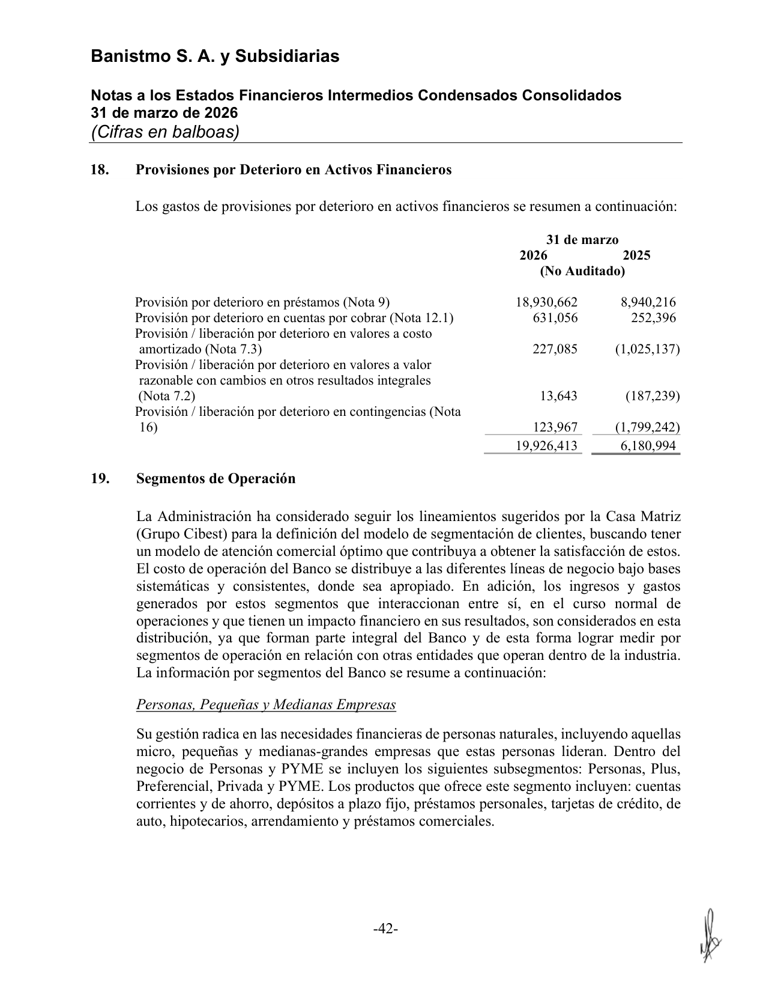

<title>Banistmo — Renglones con ganancias del portafolio de inversiones</title>
<meta name="viewport" content="width=device-width, initial-scale=1">
<style>
:root{
  --plane:#eef1f5; --surface:#f8f9fb; --surface-2:#ffffff;
  --ink:#0f1620; --ink-2:#475062; --muted:#8a91a0; --hair:#dde2ea; --hair-2:#c7cedb;
  --accent:#2a78d6; --accent-soft:#e7f0fc;
  --s1:#2a78d6; --s2:#1baf7a; --s3:#c98a00; --s6:#e34948;
  --good:#0a8a3a; --warn:#b8770a; --crit:#c0392b;
  --good-bg:#e4f4ea; --warn-bg:#fbf1dc; --crit-bg:#fae5e2; --info-bg:#e7f0fc;
  --shadow:0 1px 2px rgba(15,22,32,.04),0 8px 24px rgba(15,22,32,.06);
  --mono:ui-monospace,"SF Mono","SFMono-Regular",Menlo,Consolas,monospace;
  --sans:system-ui,-apple-system,"Segoe UI",Roboto,sans-serif;
}
@media (prefers-color-scheme:dark){
  :root{
    --plane:#0a0c10; --surface:#12161d; --surface-2:#171c25;
    --ink:#f2f5fa; --ink-2:#a8b0c0; --muted:#6b7382; --hair:#242a34; --hair-2:#2f3744;
    --accent:#4a90e2; --accent-soft:#16273c;
    --s1:#3987e5; --s2:#199e70; --s3:#c98500; --s6:#e66767;
    --good:#3bbf6a; --warn:#e0a52c; --crit:#e8756a;
    --good-bg:#12291b; --warn-bg:#2a2210; --crit-bg:#2c1815; --info-bg:#16273c;
    --shadow:0 1px 2px rgba(0,0,0,.3),0 10px 30px rgba(0,0,0,.4);
  }
}
:root[data-theme="dark"]{
  --plane:#0a0c10; --surface:#12161d; --surface-2:#171c25;
  --ink:#f2f5fa; --ink-2:#a8b0c0; --muted:#6b7382; --hair:#242a34; --hair-2:#2f3744;
  --accent:#4a90e2; --accent-soft:#16273c;
  --s1:#3987e5; --s2:#199e70; --s3:#c98500; --s6:#e66767;
  --good:#3bbf6a; --warn:#e0a52c; --crit:#e8756a;
  --good-bg:#12291b; --warn-bg:#2a2210; --crit-bg:#2c1815; --info-bg:#16273c;
}
:root[data-theme="light"]{
  --plane:#eef1f5; --surface:#f8f9fb; --surface-2:#ffffff;
  --ink:#0f1620; --ink-2:#475062; --muted:#8a91a0; --hair:#dde2ea; --hair-2:#c7cedb;
  --accent:#2a78d6; --accent-soft:#e7f0fc;
  --s1:#2a78d6; --s2:#1baf7a; --s3:#c98a00; --s6:#e34948;
  --good:#0a8a3a; --warn:#b8770a; --crit:#c0392b;
  --good-bg:#e4f4ea; --warn-bg:#fbf1dc; --crit-bg:#fae5e2; --info-bg:#e7f0fc;
}
*{box-sizing:border-box}
html{scroll-behavior:smooth}
body{margin:0;background:var(--plane);color:var(--ink);font-family:var(--sans);
  font-size:16px;line-height:1.58;-webkit-font-smoothing:antialiased}
.wrap{max-width:1000px;margin:0 auto;padding:0 24px}
h1,h2,h3{text-wrap:balance;line-height:1.18;margin:0}
.mono{font-family:var(--mono)}
a{color:var(--accent)}

header.top{position:sticky;top:0;z-index:40;background:color-mix(in srgb,var(--plane) 90%,transparent);
  backdrop-filter:blur(10px);border-bottom:1px solid var(--hair)}
.top-in{display:flex;align-items:center;gap:14px;height:56px;max-width:1000px;margin:0 auto;padding:0 24px}
.brandmark{display:flex;align-items:center;gap:10px;font-weight:680;letter-spacing:-.01em;font-size:15px}
.brandmark .dot{width:9px;height:9px;border-radius:50%;background:var(--accent);box-shadow:0 0 0 4px var(--accent-soft)}
.top-spacer{flex:1}
.top-in a{font-size:13px;color:var(--ink-2);text-decoration:none}
.top-in a:hover{color:var(--accent)}

.hero{padding:44px 0 26px;border-bottom:1px solid var(--hair)}
.eyebrow{font-family:var(--mono);font-size:12px;letter-spacing:.08em;text-transform:uppercase;color:var(--accent);font-weight:600}
h1{font-size:33px;font-weight:720;letter-spacing:-.02em;margin:12px 0 10px}
.lede{font-size:17px;color:var(--ink-2);max-width:74ch}
.meta-row{display:flex;flex-wrap:wrap;gap:8px;margin-top:18px}
.pill{font-size:12.5px;background:var(--surface-2);border:1px solid var(--hair);border-radius:999px;padding:4px 12px;color:var(--ink-2)}
.pill b{color:var(--ink)}

section{padding:34px 0;border-bottom:1px solid var(--hair)}
.sec-head{display:flex;align-items:baseline;gap:12px;margin-bottom:14px}
.sec-num{font-family:var(--mono);font-size:12px;color:var(--muted);font-weight:600}
h2{font-size:23px;font-weight:680;letter-spacing:-.01em}
h3{font-size:15.5px;font-weight:640;margin:20px 0 7px}
p{margin:0 0 12px}
.sub{color:var(--ink-2)}

.tbl-scroll{overflow-x:auto;margin:14px 0;border:1px solid var(--hair);border-radius:12px}
table{border-collapse:collapse;width:100%;font-size:14px;background:var(--surface-2);min-width:640px}
th,td{text-align:left;padding:9px 13px;border-bottom:1px solid var(--hair);vertical-align:top}
thead th{background:var(--surface);font-weight:640;font-size:12px;color:var(--ink-2);
  text-transform:uppercase;letter-spacing:.03em}
tbody tr:last-child td{border-bottom:none}
.num{text-align:right;font-variant-numeric:tabular-nums;font-family:var(--mono);font-size:13px;white-space:nowrap}
.tot td{font-weight:700;background:color-mix(in srgb,var(--accent-soft) 55%,transparent)}
.sub-row td{background:color-mix(in srgb,var(--surface) 60%,transparent);font-size:13px}
.sub-row td:first-child{padding-left:26px;color:var(--ink-2)}
.neg{color:var(--crit)}
.mini{font-size:12px;color:var(--muted)}

.badge{display:inline-block;font-size:11px;font-weight:640;padding:1px 8px;border-radius:6px;font-family:var(--mono);letter-spacing:.02em;white-space:nowrap}
.b-pl{background:var(--accent-soft);color:var(--accent)}
.b-oci{background:var(--warn-bg);color:var(--warn)}
.b-prov{background:var(--crit-bg);color:var(--crit)}
.b-yes{background:var(--good-bg);color:var(--good)}
.b-no{background:var(--crit-bg);color:var(--crit)}

.callout{display:flex;gap:13px;padding:15px 17px;border-radius:12px;margin:16px 0;font-size:14.5px;line-height:1.5}
.callout .ic{flex:0 0 24px;width:24px;height:24px;border-radius:50%;display:grid;place-items:center;font-weight:700;font-size:14px;color:#fff}
.co-key{background:var(--crit-bg)} .co-key .ic{background:var(--crit)}
.co-info{background:var(--info-bg)} .co-info .ic{background:var(--accent)}
.co-good{background:var(--good-bg)} .co-good .ic{background:var(--good)}

.map{display:grid;grid-template-columns:repeat(auto-fit,minmax(220px,1fr));gap:14px;margin:18px 0}
.mapc{background:var(--surface-2);border:1px solid var(--hair);border-radius:14px;padding:15px 17px;box-shadow:var(--shadow)}
.mapc .t{font-size:12px;color:var(--muted);text-transform:uppercase;letter-spacing:.04em;font-weight:600;margin-bottom:8px}
.mapc ul{margin:0;padding-left:16px;font-size:13.5px;color:var(--ink-2)}
.mapc li{margin:4px 0}
.mapc li b{color:var(--ink)}
.mapc .amt{font-family:var(--mono);font-size:12.5px}

.ev-grid{display:grid;grid-template-columns:repeat(auto-fill,minmax(170px,1fr));gap:12px;margin-top:12px}
.ev{display:block;background:var(--surface-2);border:1px solid var(--hair);border-radius:10px;overflow:hidden;text-decoration:none;color:inherit;box-shadow:var(--shadow)}
.ev img{width:100%;display:block;aspect-ratio:3/4;object-fit:cover;object-position:top;background:#fff;border-bottom:1px solid var(--hair)}
.ev .cap{padding:8px 10px;font-size:12px;color:var(--ink-2)}
.ev .cap b{display:block;color:var(--ink);font-size:12.5px;margin-bottom:1px}
.ev:hover{border-color:var(--accent)}

.kbd{font-family:var(--mono);font-size:12.5px;background:var(--surface);border:1px solid var(--hair-2);border-radius:5px;padding:1px 6px}
footer{padding:30px 0 60px;color:var(--muted);font-size:13px}
@media(max-width:640px){h1{font-size:26px}.hero{padding:32px 0 22px}}
</style>

<header class="top">
  <div class="top-in">
    <span class="brandmark"><span class="dot"></span>Banistmo · Ganancias de inversiones</span>
    <span class="top-spacer"></span>
    <a href="index.html">← Radar de Inversiones</a>
  </div>
</header>

<main class="wrap">

  <div class="hero">
    <div class="eyebrow">Nota de trabajo · mapa de renglones</div>
    <h1>¿Dónde aparecen las ganancias del portafolio de inversiones?</h1>
    <p class="lede">Rastreo, renglón por renglón, de <b>todos los lugares del último estado financiero de Banistmo</b>
      (Interino 1T-2026, 31-mar-2026, no auditado) donde se reconoce una <b>ganancia, ingreso o resultado del
      portafolio de inversiones en valores</b> — en el estado de resultados, en el estado de resultado integral (ORI)
      y en las notas — con la cifra exacta, la página fuente y si el renglón es <b>puramente del portafolio</b> o
      <b>mixto</b>.</p>
    <div class="meta-row">
      <span class="pill">Emisor: <b>Banistmo, S.A. y Subsidiarias</b></span>
      <span class="pill">Corte: <b>31-mar-2026</b> (interino, no auditado)</span>
      <span class="pill">Período: <b>3 meses (1T)</b></span>
      <span class="pill">Moneda: <b>USD</b> (B/. a la par)</span>
    </div>
  </div>

  <!-- MAPA RAPIDO -->
  <section id="mapa">
    <div class="sec-head"><span class="sec-num">TL;DR</span><h2>El mapa completo — 4 lugares</h2></div>
    <p class="sub">Las ganancias/ingresos del portafolio de inversiones no viven en un solo renglón: se reparten en
      <b>dos líneas del estado de resultados</b>, <b>dos líneas del ORI (patrimonio)</b>, y se ven afectadas por <b>dos
      líneas de provisiones</b>. Un renglón del P&amp;L (“Ganancia neta en valores y derivados”) es <b>mixto</b> — hay
      que abrir la Nota 21 para separar lo que es portafolio de lo que es cambio de divisas y derivados.</p>

    <div class="map">
      <div class="mapc">
        <div class="t">① Estado de Resultados · interés</div>
        <ul>
          <li><b>Valores y otros</b> <span class="amt">15,828,245</span> — cupón/interés devengado de la cartera de deuda</li>
        </ul>
      </div>
      <div class="mapc">
        <div class="t">② Estado de Resultados · valuación/venta</div>
        <ul>
          <li><b>Ganancia neta en valores y derivados</b> <span class="amt">6,315,511</span> — mixto; Nota 21 lo separa (portafolio ≈ <b>5,302,004</b>)</li>
        </ul>
      </div>
      <div class="mapc">
        <div class="t">③ Resultado Integral (ORI/patrimonio)</div>
        <ul>
          <li><b>Ganancia en valuación de instrumentos de deuda</b> <span class="amt">1,540,692</span> — no realizada (FVOCI)</li>
          <li><b>Transferida al P&amp;L</b> <span class="amt neg">(53,383)</span> — reciclaje de lo ya realizado</li>
        </ul>
      </div>
      <div class="mapc">
        <div class="t">④ Nota 18 · provisiones (netean)</div>
        <ul>
          <li>Deterioro valores a costo amortizado <span class="amt neg">(227,085)</span></li>
          <li>Deterioro valores FVOCI <span class="amt neg">(13,643)</span></li>
        </ul>
      </div>
    </div>

    <div class="callout co-key"><span class="ic">!</span>
      <div><b>El renglón que hay que abrir: “Ganancia neta en valores y derivados” (6,315,511) es mixto.</b> Solo
        ~<b>5,302,004</b> es del portafolio de inversiones (valuación FVTPL 5,154,768 + dividendos FVOCI 93,853 +
        venta FVOCI 53,383). Los otros <b>1,013,507</b> son <b>compra/venta de divisas (980,536)</b> y <b>derivados
        (32,971)</b> — no son del portafolio de inversiones. Sin abrir la Nota 21, esta línea sobreestima la ganancia
        del portafolio en ~US$1.0 M en el trimestre.</div>
    </div>
  </section>

  <!-- 1. P&L -->
  <section id="pl">
    <div class="sec-head"><span class="sec-num">01</span><h2>Estado de Ganancias o Pérdidas (P&amp;L)</h2></div>
    <p class="sub">Página 3 (impresa) / PDF p.5. Dos renglones cargan resultados del portafolio de inversiones:
      uno de <b>interés</b> y uno de <b>valuación/venta</b>.</p>
    <div class="tbl-scroll">
      <table>
        <thead><tr><th>Renglón (P&amp;L)</th><th class="num">1T-2026</th><th class="num">1T-2025</th><th>Tipo</th><th>¿Solo portafolio?</th></tr></thead>
        <tbody>
          <tr><td><b>Ingresos por intereses — “Valores y otros”</b></td><td class="num">15,828,245</td><td class="num">13,574,986</td>
            <td><span class="badge b-pl">Interés</span></td><td><span class="badge b-yes">Sí — deuda</span></td></tr>
          <tr><td><b>Ganancia neta en valores y derivados</b> <span class="mini">(Nota 21)</span></td><td class="num">6,315,511</td><td class="num">9,571,163</td>
            <td><span class="badge b-pl">Valuación/venta</span></td><td><span class="badge b-no">No — mixto</span></td></tr>
        </tbody>
      </table>
    </div>
    <p class="mini"><b>“Valores y otros”</b> es el interés/cupón devengado por la cartera de deuda. Bajo NIIF 9 el cupón de
      <b>costo amortizado y VRCOUI (FVOCI)</b> se reconoce aquí por el <b>método de tasa de interés efectiva</b>; el cupón
      <b>FVTPL (VRCR)</b>, en cambio, puede quedar <b>embebido en la línea de valuación</b> (Nota 21, "Ganancia en valores a VRCR,
      realizado + no realizado" 5,154,768) <b>sin poder aislarse</b>. Por eso, para el <i>yield de solo interés</i>, el denominador se
      mide sobre la <b>porción que sí devenga cupón en esta línea (VRCOUI + costo amortizado = 1,068.9M)</b>, excluyendo el FVTPL
      (574.4M): 63.3M anualizado ÷ 1,068.9M = <b>~5.9%</b> (vs 3.9% sobre cartera total — ver <a href="index.html#rentabilidad">sección 06</a>).
      El interino no abre esta línea en una nota aparte (solo aparece en la cara del estado y, parcialmente, en la Nota 23 de partes
      relacionadas), y es "Valores <b>y otros</b>" (puede incluir algo de interés no-cartera). Las tasas que devengan los instrumentos:
      FVTPL 1.13%–8.00%, FVOCI 2.75%–7.00%, costo amortizado 4.00%–10.22% (Nota 7).</p>
  </section>

  <!-- 2. Nota 21 -->
  <section id="nota21">
    <div class="sec-head"><span class="sec-num">02</span><h2>Nota 21 — desglose de “Ganancia neta en valores y derivados”</h2></div>
    <p class="sub">Página 45 (impresa) / PDF p.47. Aquí se ve qué parte de los 6,315,511 es realmente del portafolio
      de inversiones y qué parte es divisas/derivados.</p>
    <div class="tbl-scroll">
      <table>
        <thead><tr><th>Componente</th><th class="num">1T-2026</th><th class="num">1T-2025</th><th>¿Portafolio de inversiones?</th></tr></thead>
        <tbody>
          <tr><td>Ganancia en valores a valor razonable con cambios en resultados <span class="mini">(FVTPL, realizado + no realizado)</span></td>
            <td class="num">5,154,768</td><td class="num">7,907,914</td><td><span class="badge b-yes">Sí — cartera trading</span></td></tr>
          <tr><td>Ganancia en compra y venta de monedas extranjeras <span class="mini">(Nota 8.1)</span></td>
            <td class="num">980,536</td><td class="num">1,361,148</td><td><span class="badge b-no">No — divisas</span></td></tr>
          <tr><td>Dividendos sobre instrumentos FVOCI</td>
            <td class="num">93,853</td><td class="num">168,911</td><td><span class="badge b-yes">Sí — dividendos cartera</span></td></tr>
          <tr><td>Ganancia neta en venta de valores FVOCI <span class="mini">(realizado, reciclado de ORI)</span></td>
            <td class="num">53,383</td><td class="num">113,222</td><td><span class="badge b-yes">Sí — venta cartera</span></td></tr>
          <tr><td>Ganancia neta en contratos de derivados</td>
            <td class="num">32,971</td><td class="num">19,968</td><td><span class="badge b-no">No — derivados</span></td></tr>
          <tr class="tot"><td>Total línea del P&amp;L</td><td class="num">6,315,511</td><td class="num">9,571,163</td><td></td></tr>
          <tr class="sub-row"><td>→ Subtotal <b>portafolio de inversiones</b> (FVTPL + dividendos + venta FVOCI)</td>
            <td class="num">5,302,004</td><td class="num">8,190,047</td><td><span class="badge b-yes">Sí</span></td></tr>
          <tr class="sub-row"><td>→ Subtotal <b>no portafolio</b> (divisas + derivados)</td>
            <td class="num">1,013,507</td><td class="num">1,381,116</td><td><span class="badge b-no">No</span></td></tr>
        </tbody>
      </table>
    </div>
  </section>

  <!-- 3. OCI -->
  <section id="oci">
    <div class="sec-head"><span class="sec-num">03</span><h2>Estado de Resultado Integral (ORI / patrimonio)</h2></div>
    <p class="sub">Página 4 (impresa) / PDF p.6. Las ganancias <b>no realizadas</b> de la cartera FVOCI y su
      <b>reciclaje</b> a resultados. Estas partidas afectan el <b>patrimonio</b>, no la utilidad neta (salvo la que se
      transfiere al P&amp;L al vender).</p>
    <div class="tbl-scroll">
      <table>
        <thead><tr><th>Renglón (ORI)</th><th class="num">1T-2026</th><th class="num">1T-2025</th><th>Naturaleza</th></tr></thead>
        <tbody>
          <tr><td><b>Ganancia en valuación de instrumentos de deuda</b></td><td class="num">1,540,692</td><td class="num">362,332</td>
            <td><span class="badge b-oci">No realizada · FVOCI deuda</span></td></tr>
          <tr><td><b>Ganancia en valores VRCOUI transferida al P&amp;L</b> <span class="mini">(Nota 21)</span></td>
            <td class="num neg">(53,383)</td><td class="num neg">(113,222)</td>
            <td><span class="badge b-oci">Reclasificación (reciclaje)</span></td></tr>
          <tr><td>Cambios netos en valuación de instrumentos de patrimonio <span class="mini">(acciones)</span></td>
            <td class="num">—</td><td class="num">10,200</td><td><span class="badge b-oci">No reciclable</span></td></tr>
          <tr class="tot"><td>Otras partidas de resultado integral, neta</td><td class="num">1,487,309</td><td class="num">259,310</td><td></td></tr>
        </tbody>
      </table>
    </div>
    <div class="callout co-info"><span class="ic">i</span>
      <div><b>Cómo encaja el reciclaje.</b> La venta de bonos FVOCI generó una ganancia realizada de <b>53,383</b> que se
        reconoció en el P&amp;L (Nota 21, “Ganancia neta en venta de valores FVOCI”) y, simultáneamente, se
        <b>retiró del ORI</b> con la línea “transferida al estado de ganancias o pérdidas” <b>(53,383)</b> — mismo monto,
        signo opuesto. Es el mecanismo NIIF 9 de reciclaje de la deuda a FVOCI. La ganancia <b>no realizada</b> del
        trimestre (1,540,692) permanece en patrimonio hasta que se venda.</div>
    </div>
  </section>

  <!-- 4. Provisiones -->
  <section id="prov">
    <div class="sec-head"><span class="sec-num">04</span><h2>Nota 18 — provisiones de deterioro sobre la cartera (netean)</h2></div>
    <p class="sub">Página 42 (impresa) / PDF p.44. No son ganancias, pero son los renglones que <b>reducen (o aumentan,
      si se liberan)</b> el resultado neto del portafolio — necesarios para llegar a la ganancia <b>neta</b>. En 1T-2026
      fueron cargos; en 1T-2025 fueron liberaciones (ganancia).</p>
    <div class="tbl-scroll">
      <table>
        <thead><tr><th>Renglón (Nota 18)</th><th class="num">1T-2026</th><th class="num">1T-2025</th><th>Efecto</th></tr></thead>
        <tbody>
          <tr><td>Provisión/(liberación) por deterioro en valores a costo amortizado <span class="mini">(Nota 7.3)</span></td>
            <td class="num neg">227,085</td><td class="num">(1,025,137)</td><td class="mini">cargo 2026 / liberación 2025</td></tr>
          <tr><td>Provisión/(liberación) por deterioro en valores a FVOCI <span class="mini">(Nota 7.2)</span></td>
            <td class="num neg">13,643</td><td class="num">(187,239)</td><td class="mini">cargo 2026 / liberación 2025</td></tr>
        </tbody>
      </table>
    </div>
    <p class="mini">Ambas partidas están dentro de la línea del P&amp;L “Provisiones por deterioro de activos financieros”
      (19,926,413 en 1T-2026), junto con el deterioro de préstamos y cuentas por cobrar.</p>
  </section>

  <!-- RESUMEN CONSOLIDADO -->
  <section id="resumen">
    <div class="sec-head"><span class="sec-num">05</span><h2>Resumen — ganancia total del portafolio en el trimestre</h2></div>
    <p class="sub">Sumando todos los renglones del portafolio de inversiones (aislando lo mixto), el resultado del
      trimestre se compone así:</p>
    <div class="tbl-scroll">
      <table>
        <thead><tr><th>Concepto (solo portafolio de inversiones)</th><th class="num">1T-2026</th><th>Dónde</th></tr></thead>
        <tbody>
          <tr><td>Interés devengado (“Valores y otros”)</td><td class="num">15,828,245</td><td class="mini">P&amp;L · interés</td></tr>
          <tr><td>Ganancia por valuación FVTPL</td><td class="num">5,154,768</td><td class="mini">P&amp;L · Nota 21</td></tr>
          <tr><td>Dividendos FVOCI</td><td class="num">93,853</td><td class="mini">P&amp;L · Nota 21</td></tr>
          <tr><td>Ganancia realizada en venta FVOCI</td><td class="num">53,383</td><td class="mini">P&amp;L · Nota 21</td></tr>
          <tr><td>(−) Provisiones de deterioro sobre valores (CA + FVOCI)</td><td class="num neg">(240,728)</td><td class="mini">P&amp;L · Nota 18</td></tr>
          <tr class="tot"><td>= Resultado del portafolio reconocido en <b>utilidad neta</b></td><td class="num">20,889,521</td><td class="mini">P&amp;L</td></tr>
          <tr><td>(+) Ganancia no realizada FVOCI deuda (a patrimonio)</td><td class="num">1,540,692</td><td class="mini">ORI</td></tr>
          <tr class="tot"><td>= Resultado <b>integral</b> del portafolio (P&amp;L + ORI)*</td><td class="num">22,430,213</td><td class="mini">P&amp;L + ORI</td></tr>
        </tbody>
      </table>
    </div>
    <p class="mini">* El reciclaje de 53,383 no se doble-cuenta: aparece +53,383 en el P&amp;L (venta) y −53,383 en el ORI
      (transferencia), por lo que se netea al consolidar P&amp;L + ORI. Excluye divisas (980,536) y derivados (32,971),
      que no son del portafolio de inversiones. Cifras del período de 3 meses terminado el 31-mar-2026, no auditadas.</p>
  </section>

  <!-- EVIDENCIA -->
  <section id="evidencia">
    <div class="sec-head"><span class="sec-num">06</span><h2>Evidencia — páginas fuente</h2></div>
    <p class="sub">Capturas de las páginas exactas del interino 31-mar-2026. Clic para ampliar. Fuente PDF:
      <a href="https://assets.ctfassets.net/catp2t59asao/7ezsgNsKAl5X9N0tU2Oa0m/707664e4f324bf782e16102b486f6d44/C000-Banistmo-SA-y-Subsidiarias-Informe-Completo-Mar26-Interino-Consolidado-Firmado-Esp.pdf">Informe interino completo firmado, Mar-2026</a>.</p>
    <div class="ev-grid">
      <a class="ev" href="capturas-fuentes/banistmo-mar2026_p005_estado-resultados.png">
        
        <div class="cap"><b>P&amp;L · p.3</b>“Valores y otros” 15.8M · “Ganancia neta en valores y derivados” 6.3M</div></a>
      <a class="ev" href="capturas-fuentes/banistmo-mar2026_p047_nota21-ganancia-valores.png">
        
        <div class="cap"><b>Nota 21 · p.45</b>Desglose de la ganancia neta en valores y derivados</div></a>
      <a class="ev" href="capturas-fuentes/banistmo-mar2026_p006_resultado-integral.png">
        
        <div class="cap"><b>ORI · p.4</b>Ganancia en valuación de deuda 1.54M · transferida al P&amp;L (53.4K)</div></a>
      <a class="ev" href="capturas-fuentes/banistmo-mar2026_p044_nota18-provisiones.png">
        
        <div class="cap"><b>Nota 18 · p.42</b>Provisiones de deterioro sobre valores (CA + FVOCI)</div></a>
      <a class="ev" href="capturas-fuentes/banistmo-mar2026_p022_nota7-inversiones.png">
        
        <div class="cap"><b>Nota 7 · p.20</b>Cartera de valores (FVTPL/FVOCI/CA) y tasas que devengan</div></a>
    </div>
  </section>

  <section id="cierre">
    <div class="sec-head"><span class="sec-num">07</span><h2>Conclusión</h2></div>
    <div class="callout co-good"><span class="ic">✓</span>
      <div><b>Todos los renglones identificados.</b> Las ganancias del portafolio de inversiones de Banistmo aparecen en
        <b>6 renglones</b> repartidos en 4 lugares: 2 en el estado de resultados (<b>Valores y otros</b>;
        <b>Ganancia neta en valores y derivados</b>), su desglose en la <b>Nota 21</b>, 2 en el estado de resultado
        integral (<b>ganancia no realizada de deuda</b> y su <b>reciclaje</b>), y 2 partidas de provisión en la
        <b>Nota 18</b> que netean el resultado. El único renglón que requiere apertura es <b>“Ganancia neta en valores y
        derivados”</b>, mixto con divisas y derivados. Verificado contra las páginas fuente del interino Mar-2026.</div>
    </div>
    <p class="mini">Preparado para la mesa de tesorería · corte 31-mar-2026. Reporte completo en
      <a href="index.html">index.html</a> · dataset en <span class="kbd">datos-extraidos.md</span>.</p>
  </section>

</main>

<footer><div class="wrap">Radar de Inversiones — Banca de Panamá · Banistmo como banco base · datos 2024–2026.</div></footer>

<script>
(function(){ try{ var t=localStorage.getItem("theme"); if(t)document.documentElement.setAttribute("data-theme",t); }catch(e){} })();
</script>
